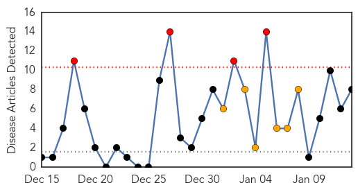
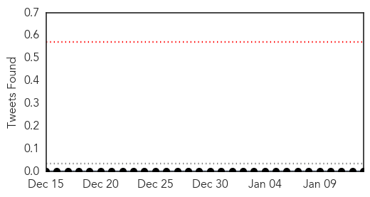
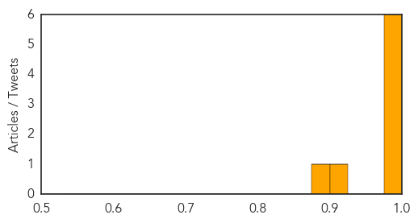

Toggle navigation
Early Warning
Daily Alerts
Swine Flu
Jan 13, 2015
Compare to:
-
Dengue Fever
Hemmorhagic Fever
Mold/Fungal Infection
Influenza
Meningitis
Pertussis / Whooping Cough
Middle East Respiratory Syndrome
Cholera
Hepatitis
Chikungunya
Yellow Fever
Bubonic Plague
West Nile Virus
Ebola
Measles
Unknown
Mumps
30 Day Trends
Web: 4
alerts
, 6
warnings
Twitter: 0
alerts
, 0
warnings
Top Articles:
0.999
Rajasthan to monitor area around homes affected by swine flu
0.999
Rajasthan Govt. to monitor areas around swine flu affected homes
0.988
10 new swine flu cases reported
0.987
Four new swine flu cases reported in Gurgaon
0.983
19-month-old baby among 10 new cases of swine flu
0.982
Swine flu claims two more lives in Rajasthan, toll rises to 7
0.915
Swine flu kills two more in Hyderabad
0.881
Kingsport Times-News: A revolutionary new treatment in a dangerous flu season
Top Tweets:
No tweets found for Jan 13, 2015
Web/News Articles

Tweets

Article Locations
Article Confidences
